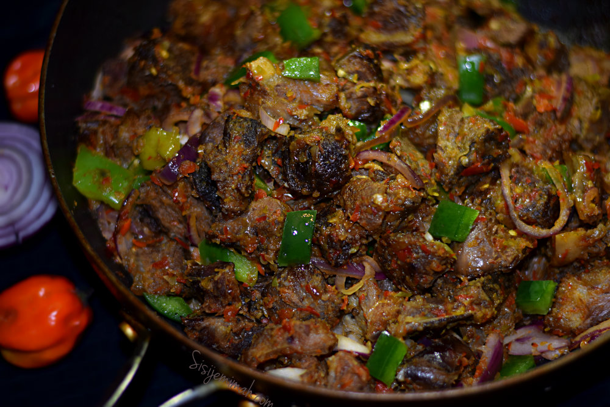

How to make Asun

Delicious spicy grilled goat meat
Ingredients
- 1 kg goat meat, cut into chunks
- 2 tablespoons ground crayfish
- 2 tablespoons ground pepper
- 1 onion, chopped
- 2 tablespoons palm oil
- Salt to taste
Instructions
- In a pot, boil the goat meat with chopped onions, salt, and water until tender.
- Once cooked, drain the meat and set aside.
- In a separate pan, heat palm oil and sauté the ground crayfish and pepper.
- Add the cooked goat meat to the pan and stir well to combine.
- Allow to cook for an additional 5-10 minutes, stirring occasionally.
- Serve hot, garnished with sliced onions and your favorite side dishes.